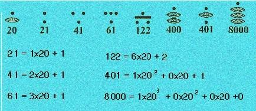

1.1.1. Origen y desarrollo de los métodos cuantitativos y cualitativos
Las diversas corrientes de pensamientos (Empirismo, el Materialismo Dialéctico, el Positivismo, la Fenomenología y el Estructuralismo) han dictado la marcha para la búsqueda del conocimiento, dando origen desde mitad del siglo XX a dos corrientes principales: el enfoque cuantitativo y el cualitativo de la investigación.
Para el método cualitativo que parte de la premisa de que todo sistema social tiene un punto de vista particular de entender las cosas y eventos que recolecta datos apoyándose de técnicas que no pretenden medir ni asociar las mediciones con números, siendo estas: observación no estructurada, entrevistas abiertas, evaluación de experiencias personales, introspección, etc.
En lo referente al método con enfoque cuantitativo y de acuerdo con ciertas reglas lógicas, la mejor forma de obtener información confiable es mediante la recolección y análisis de datos, que son transformados en valores numéricos medibles (cuantificables) que son analizados con técnicas estadísticas para extender los resultados a un segmento más amplio. Los procesos cuantitativos se asociación con experimentos y estudios que emplean instrumentos de medición estandarizados. [1]

Extraído de: http://discovery-web.over-blog.es/article-origen-historicos-de-los-numeros-46593885.html